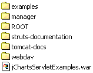

There are many Servlet Containers available for download, but Catalina/Tomcat from the Apache Jakarta Project is numba von (#1) in my book.
Go ahead and download the latest version of Catalina or Tomcat and follow their installation instructions. Once you get it working,
browse the directories and check out what you have. The top level directory should look something like the following:
As you learned from the Tomcat documentation, the webapps folder is where the magic happens. Place the jChartsServletExamples.war file in this directory
| |
open the webapps folder |
 |
Now, start Catalina/Tomcat and you will see a new directory containing the jChartsServletExamples web application.
Open a web browser, my personal recommendation is the Mozilla browser, and point to the following address http://127.0.0.1:8080/jChartsServletExamples/index.html ( 127.0.0.1 is the same as 'localhost'):
And if everything works, you should see the jCharts Servlet Demo page come up. Wasn't that simple?
|